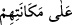

hayvanlıktan asla hiçbir şuuru olmayan cansızlığa düşmektir.
“ oturdukları yerde ve menzilde, yerlerinde donup kalırlar demektir.
Bazıları ‘Onları ayakları üzerine oturtur ve kötürüm yapardık’ demişlerdir.
“Ne ileriye” önlerine doğru “gitmeye güçleri yeterdi” yâni bulundukları yerden
ileriye doğru gitmeye güç yetiremezlerdi “ne de geri” arka taraflarına doğru
“gelmeye!”
Son iki âyette bu şartların getirilmesi, sadece Allah Teâlâ’nın zikredilen onların
gözlerini büsbütün kör etmeye ve şekillerini değiştirmeye muktedir olduğunu beyan
etmek için değildir. Bilakis onların içinde bulundukları inkar, ahdi bozma ve kendi
benzerlerinin helâk edilmesinin izlerini görüp öğüt almamaları gibi durumlarla, âhirette
ağızlarının mühürlenmesi gibi dünyada da bu cezâlara çarptırılmayı hak ettiklerini
açıklamak içindir. Bu cezânın verilmemesine tek mâni, ilâhî irâdenin buna taalluk
etmemesidir.
Sanki şöyle denilmiştir: Onları büsbütün kör yaparak ve şekillerini değiştirerek
cezâlandırmayı dilesek elbette bunu yaparız. Ancak tevbe, îman ve nimete şükredene
kadar veya onlardan bu vasıflara sahip bir nesil meydana gelene kadar bir zaman onlara
mühlet vermeyi gerektiren umûmî rahmet ve tam hikmet prensibi ile hareket ederek
böyle yapmadık.
Hikmet ehlinden birisi şöyle demiştir: Şeklini değiştirme (mesh) iki türlüdür: Özel
olan yaratılışı çirkinleştirmektir. Her zaman genel olan ise ahlâkı değiştirmektir. Bu da
insanın hayvanlardan bazılarının huy ve mizacı olan kötü bir ahlâk ile ahlâklanmasıdır.
Meselâ insanın aşırı hırsta köpek gibi, oburlukta hınzır gibi, bönlük ve bilmemezlikte
öküz gibi olması bu kabildendir.
Buna göre âyetin ibaresi sûret ve şeklin değiştirilmesi, işâreti ise insânî sıfatların
yırtıcı hayvanlara ve şeytana âit sıfatlarla değiştirilmesi hakkındadır. Artık bu insanlar
bir daha kendilerinden bu kötü sıfatları gidermeye de, tekrar insanî sıfatlarına dönmeye
de güç yetiremezler. Allah Teâlâ dünyada kimin sıfatlarını değiştirirse, kıyamette onu,
değiştirilmiş olan sıfatının sûretinde haşreder. Nitekim sahih bir hadîste (İbrahim
(a.s.)’ın babası) Âzer’in sırtlan sıfatı üzere haşrolunacağı rivâyet edilmiştir.[169]
Hayâtü’l-hayevân’da der ki: “Bir hadîste şöyle vârid olmuştur: Kıyamet günü
İbrahim (a.s.) babası Âzer ile karşılaşır. Âzer’in yüzü gözü toz toprak içindedir.
İbrahim (a.s.) ona: “Ben sana âsi olma, karşı gelme demedim mi?” der. Babası da:
“Bugün artık sana karşı çıkmayacağım” der. Bunun üzerine İbrahim (a.s.):
“Allah’ım! Sen kulların dirilecekleri gün beni mahcup etmeyeceğine söz vermiştin
(bk. eş-Şuara, 26/87) Hangi zillet babamın cehennemlik olmasından daha kötü
olabilir?” deyince Allah Teâlâ: “Ben cenneti kâfirlere haram kıldım” buyurur. Sonra
“Ey İbrahim, ayaklarının altında ne var?” denir. İbrahim (a.s.) bakar ki ne görsün
orada tüylü erkek bir sırtlan var. Hemen o sırtlan ayaklarından tutulup cehenneme
atılır.”[170]